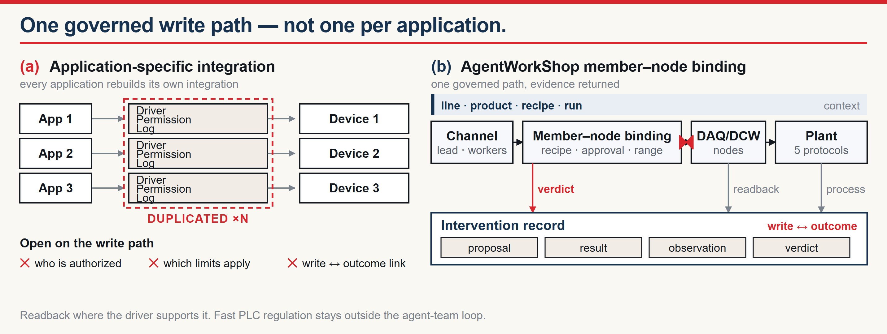
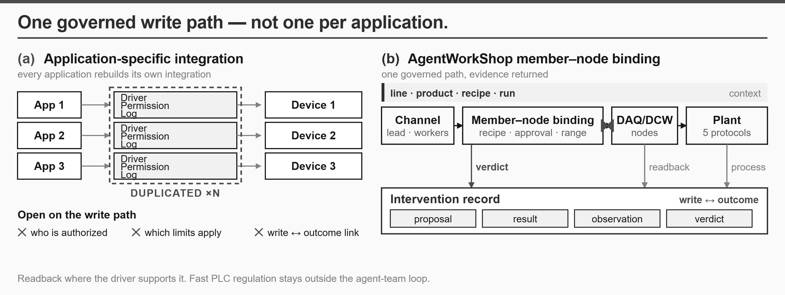
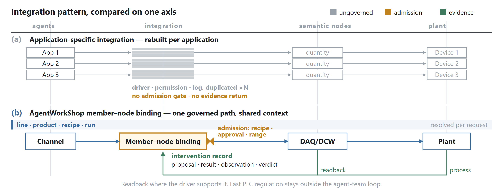
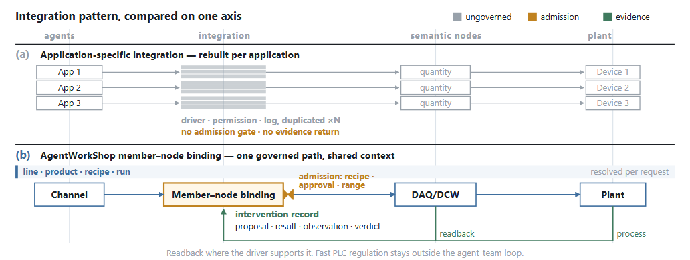
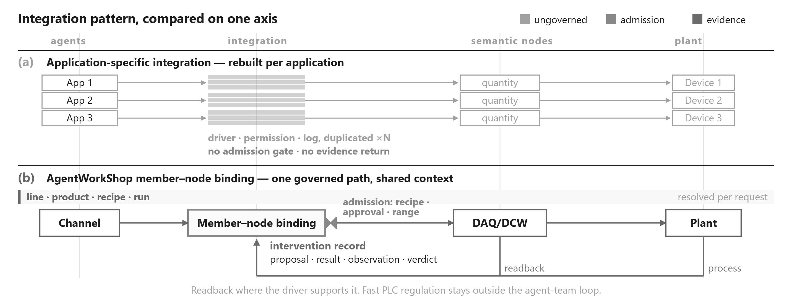
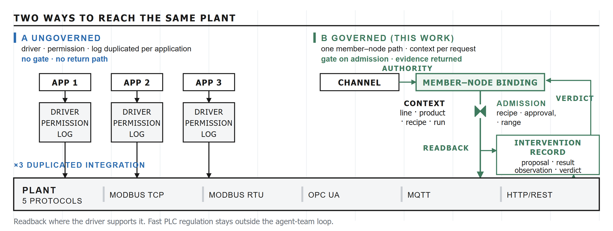
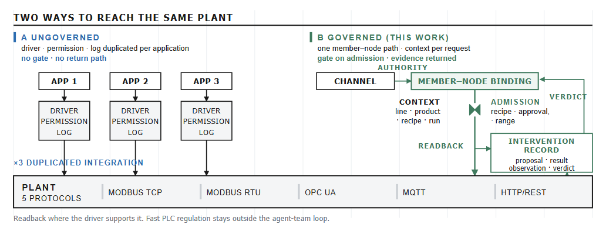
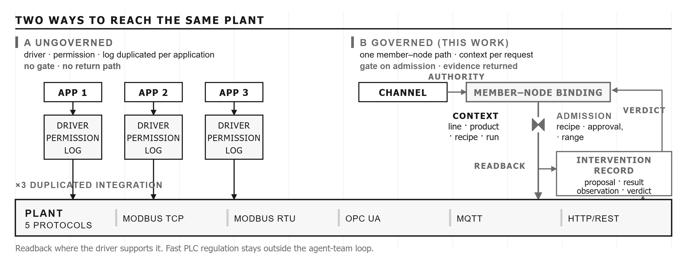

Same content, same canvas (716 × 270 units → 7.16 × 2.70 in in IEEEtran two-column), three different structural grammars. Every version carries the full content inventory: duplicated per-application integration with its three open questions, the governed member–node path, the admission gate, shared production context, and the evidence return.
秒数轮盘 #4 · 杂志撞色数据页 —— 结论式大标题压顶、撞色双主色（墨蓝 × 信号红）、极端字号对比、1px 细线与纸白留白。把 (a) 的重复集成画成被红框圈住的堆叠块，把 (b) 的受治理路径画成一条有闸门、有回路的通径。


现实参照标杆 · Distill 的技术解释图语法 —— 不喊口号，把 (a)(b) 放在同一套列坐标上上下对照，让「同一根轴、两种结构」自己说话；低饱和概念色各绑一个语义（灰=未治理 / 琥珀=准入 / 绿=证据），发丝级细线，大量负空间做分组。



最佳设计师逻辑 · Otl Aicher（1972 慕尼黑奥运视觉系统、Ulm 栅格方法）—— 可见 12 栏栅格、只走 0/90° 的正交布线、全大写宽字距标签、同模数组件；底部一条贯穿全幅的 PLANT 带，左半是三次无闸门直落、右半是一条带闸门与证据回路的受治理路径。


